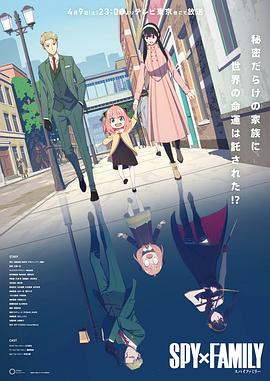

2022年3月
广播发布后不可编辑，所以每条都是那一刻的原话。
2022-03-31 18:13:31
 看过 大热门 / 빅이슈
看过 大热门 / 빅이슈
意外地精彩，也可能是没看过这种题材的，感觉很抓人；演技没得说。
2022-03-29 04:59:59
关注片单：
2022-03-28 14:22:00
想看 刺猬索尼克2 / Sonic the Hedgehog 2
2022-03-26 21:08:05

2022-03-26 21:04:02

2022-03-26 16:08:41

2022-03-26 16:02:46

2022-03-25 16:00:03

2022-03-25 15:56:22
 想看 智能大反攻 / The Mitchells vs. The Machines
想看 智能大反攻 / The Mitchells vs. The Machines
2022-03-25 15:56:15
 想看 夏日友晴天 / Luca
想看 夏日友晴天 / Luca
2022-03-25 15:55:55
 想看 逃亡 / Flugt
想看 逃亡 / Flugt
2022-03-24 16:48:31
关注榜单：
2022-03-24 16:48:03

2022-03-22 20:23:20
在看 大热门 / 빅이슈
有点意思诶，开篇就把矛盾摆清楚了
2022-03-22 16:33:35
 想玩 塞伯利亚之谜：世界之前 Syberia: The World Before
想玩 塞伯利亚之谜：世界之前 Syberia: The World Before
2022-03-21 19:51:37

the good place女主竟然饰演mary poppins，惊了，不过真的好短，感觉是什么要求加最低时薪的广告。
2022-03-20 20:23:02
 看过 拥抱小熊猫：青春变形记背后的故事 / Embrace the Panda: Making Turning Red
看过 拥抱小熊猫：青春变形记背后的故事 / Embrace the Panda: Making Turning Red
非常有启发，而且因为turning red本身主要就是女性角色，这个幕后也都是女性，各种各样对青春期的理解，各种各样的家庭，以及长大后的观念的转变。交融出来这么一部作品，真的是太好了。
2022-03-19 22:21:49
 看过 爱情盲选：日本篇 / ラブ・イズ・ブラインド: Japan
看过 爱情盲选：日本篇 / ラブ・イズ・ブラインド: Japan
唔，有点无聊，没看下去
2022-03-19 15:05:25
 看过 命运 / Destino
看过 命运 / Destino
太写意了，看不懂，但是感觉内容很丰富
2022-03-19 14:56:53

2022-03-18 23:31:05
想看 大热门 / 빅이슈
2022-03-18 16:24:39
想看 爱情盲选：日本篇 / ラブ・イズ・ブラインド: Japan
2022-03-17 13:25:32

难得有对亚裔描述的这么贴切的动画，非常有共鸣。咱们自己肯定拍不出来，还好最近欧美发力了，各种尝试亚洲题材。还是老样子，我很期待刺客信条日本（避免乳滑地做亚洲题材）。
2022-03-17 12:05:53
说：
db💊 标记个电影也要等待审核！！！
2022-03-17 12:04:11
想看 拥抱小熊猫：青春变形记背后的故事 / Embrace the Panda: Making Turning Red
被投喂了
2022-03-17 07:30:31
 想看 弹子球游戏 第一季 / Pachinko Season 1
想看 弹子球游戏 第一季 / Pachinko Season 1
2022-03-15 20:53:14
写了《
不知道有没有机会看到
2022-03-13 10:02:50

emmm好无厘头好乱
2022-03-11 23:41:31

剧情真的是离谱，反正把人写死就对了，不需要逻辑，不需要合理。很多铺垫后面都没用到感觉。也没看懂片尾说什么来了。。